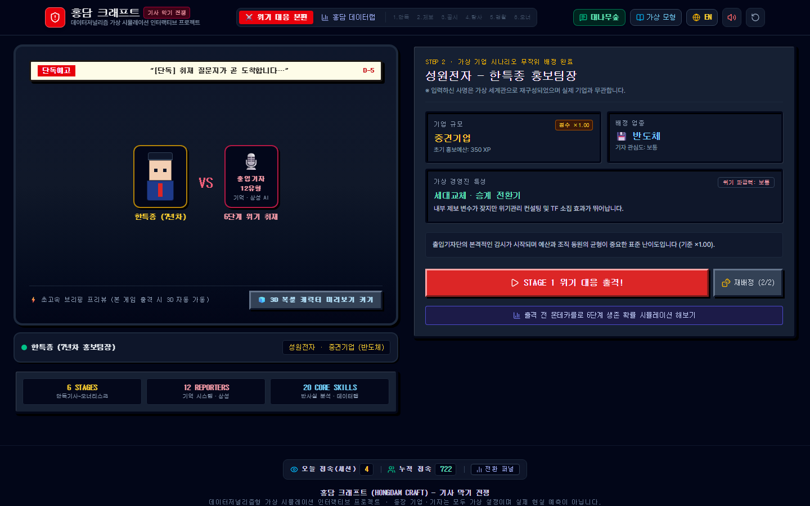
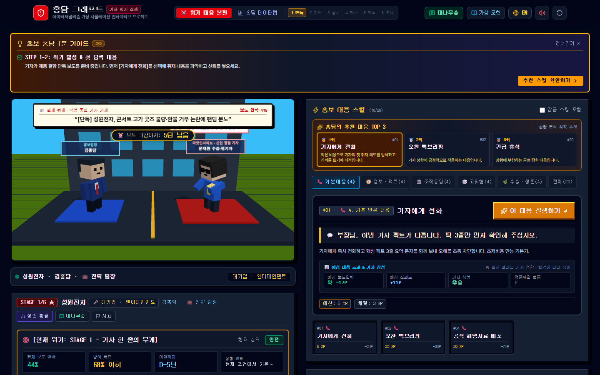
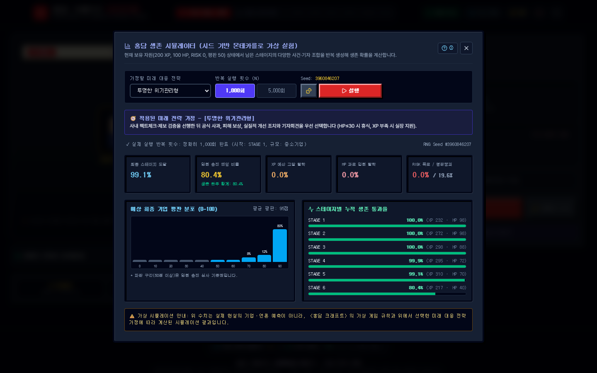

What this game is
A reporter writes the story, but on the receiving end of that story is the company's PR chief. The question list arrives in the morning and the deadline hits by evening. Explain yourself and the backlash gets worse; stay silent and the exclusive runs.
Hongdam Craft turns that other side of the day into a game. As the PR chief of a fictional company, you work through six stages of crisis in turn: exclusive, tip-off, disclosure, investigative, prosecution, and owner. At each stage you read the reporter's questions and pressure, weigh your PR budget (XP), stamina (HP), backlash risk (RISK), and corporate reputation, and choose your response.
Reporters come in 12 types, each with different temperaments, memories, and matchups. The same response works on one reporter and backfires on another. Based on all these rules, you can even run a Monte Carlo simulation of your survival probability, so this is a game of planning strategy, not a simple quiz.
All companies and reporters that appear are fictional and do not predict real events. The company name you enter is also reworked into the fictional world.
How it plays
Set a name and company (random assignment available) and pick a difficulty. Rookie Chief (×0.85, milder surprise risk and reporter counterattacks, retry after a defeat), Strategy Chief (×1.00, standard), and Legendary Chief (×1.50, reporter counterattacks +20%, surprise risk 50%, final score ×1.5). Dress up your 3D voxel character with hairstyle, suit color, skin tone, tie, and glasses.
Your company's size (from startup to conglomerate), industry, reporter interest, and executive traits are assigned at random. For example, you might draw a mid-sized semiconductor company with executives in a succession transition; size changes the score multiplier and the starting PR budget. If you don't like it, you can reassign (twice).
Stage 1 exclusive, stage 2 tip-off, stage 3 disclosure, stage 4 investigative, stage 5 prosecution, stage 6 owner risk. Each stage shows the current coverage pressure, the defense goal, and the turns left before the deadline, while survival probability and a situation diagnosis update in real time. It auto-saves every turn.
A memory and matchup AI changes how well your responses work depending on each reporter's temperament. 20 core skills, such as counterfactual analysis and the Hongdam Data Lab, help your judgment.
Using a seed-based Monte Carlo, it repeats the remaining stages 1,000 or 5,000 times to calculate survival probability. Assume a future strategy from transparent crisis management, information and fact-checking, relationship-centered, legal response, budget-heavy, random response (baseline), or your own actual play pattern, and see the rate of reaching the final stage, the share of executive-promotion endings, causes of elimination, the reputation distribution, and pass rates by stage.
There is a Data Lab that analyzes your play records, and a Bamboo Forest lounge where you can leave anonymous impressions and venting. You can share your result after finishing just stage 1.
Screen previews
Start — the PR chief's profile and difficulty

Assignment — a random fictional company

Stage 1 — the weight of a single line of article

Simulator — survival probability across six stages
Rules and simulation
Example result (small business, transparent crisis management, 1,000 runs, seed 3960846207): reached the final stage 99.1%, executive-promotion ending 80.4%, eliminated by budget exhaustion 0.0%, eliminated by stamina 0.0%, reputation collapse 19.6%. These figures are simulation results calculated from the game's rules and the chosen strategy assumptions, and do not predict any real company or media outlet.
Good to know
This game is a fictional data journalism simulation. The companies, reporters, and crisis events are all fictional, and the scores and probabilities come from rules made for the game. It does not guarantee or predict real PR strategy or press outcomes.
The higher the difficulty, the stronger the reporter counterattacks and surprise risk, and the fewer retry chances after a defeat. Retry after a defeat is supported only at the Rookie Chief difficulty.
At the bottom of the service there is a notice: "All companies and reporters that appear are fictional and are not a prediction of reality."
Technology and how it was made
Development status
Anyone can play right away. It auto-saves every turn, and there are buttons to turn sound on and off and to start over.